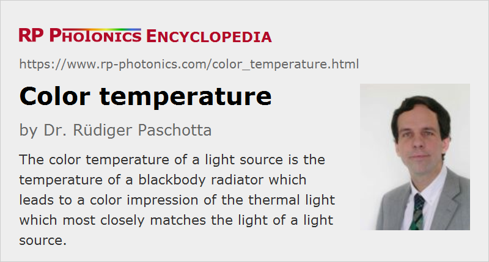

Color Temperature
Definition: the temperature of a blackbody radiator which leads to a color impression of the thermal light which matches most closely the light of a light source
German: Farbtemperatur
Category: vision, displays and imaging
Formula symbol: Tc
Units: Kelvin (K)
How to cite the article; suggest additional literature
Author: Dr. Rüdiger Paschotta
Particularly white light sources, or the light emitted by them, are often qualified with a color temperature Tc as an indication of their color tone. The color temperature is essentially defined as the temperature of a blackbody radiator (Planck radiator), where the color tone of the emitted light most closely approximates that of the light source. That definition can be easily be applied to light or light sources with a broad spectrum similar to that of a blackbody radiator – for example, to incandescent lamps. One may adjust the blackbody temperature until the spectra fit reasonably well. For light sources exhibiting a quite structured optical spectrum, for example various gas discharge lamps and fluorescent lamps, but also television and computer monitors, one requires more sophisticated methods – see below the section on the correlated color temperature.
Color temperatures are generally specified with units of Kelvin (K), not degrees Celsius ( °C). They are often specified for lighting products – e.g. for incandescent lamps including halogen lamps, fluorescent lamps and sources based on light-emitting diodes (LEDs) – because it is relevant for many applications.
Colors of Blackbody Radiation
A blackbody radiator, ideally exhibiting a wavelength-independent emissivity of 1, emits broadband thermal radiation. Figure 1 shows optical spectra for blackbody radiation at different temperatures, calculated with Planck's law. The higher the temperature, the more the spectral maximum shifts toward shorter wavelengths.

One obtains dim red light when the emitter temperature is relatively low, e.g. 1000 K, because the power spectral density is then substantially higher at the red end of the visible spectrum than on the blue side. For a higher temperature of 2000 K, the color tone changes to a kind of orange, later to yellow and white. There is actually a substantial range of color tones which can be called white, from warm white around 3000 K over daylight around 6500 K to cold white at e.g. 8000 K or even higher; a particular white point can simply be characterized by its color temperature. For infinitely high temperatures, a certain bluish color tone is approached. A green or purple hue, for example, is never reached.
Particularly for low color temperatures, a large percentage of the total emitted optical power of a black body is in the infrared region; that part does not contribute to the visual impression, but may be felt on the skin as heat radiation.

{kind=link}
In order to objectively qualify the color values, one can calculate the chromaticity of blackbody radiation as a function of the temperature. Figure 2 shows the CIE XYZ chromaticity diagram, where he chromaticity values or blackbody radiation with some range of temperatures are indicated; they lie on the so-called Planckian locus.
Figure 3: White tones with different color temperatures. The colors (with RGB values calculated from the temperature with some simple formulas) are quite approximate, based on data from http://www.tannerhelland.com/4435/convert-temperature-rgb-algorithm-code/.
If thermal radiation is emitted by a body having a wavelength-dependent emissivity, its color temperature may significantly deviate from the temperature of the body. In case of non-thermal emitters, e.g. radiating fluorescence, the color temperature has nothing to do with the temperature of the emitting object.
Warm and Cold Colors
Curiously, low color temperatures are associated with “warm” light, while high color temperatures result in “cold” light; the opposite should have been expected. The reason for that curiosity, which sometimes causes confusion, is probably that while “warm” white light is frequently thermal radiation (from not too hot bodies), and often accompanied by a lot of infrared light (heat radiation) which can be felt on the skin, light with “cold” color tones is often generated with non-thermal light sources, e.g. via fluorescence or light-emitting diodes (LEDs), which in fact can stay relatively cool during operation and hardly emit any infrared light.
Color Temperatures of Natural Daylight
The color temperature of light outside the building, essentially generated by the Sun, can strongly vary due to changing ambient conditions:
- Direct sunlight, received outside the atmosphere of Earth or at high altitudes, has a color temperature around 5900 K, not far from the temperature of those parts of the Sun which emit most of the visible radiation. When sunlight reaches the surface of Earth and are reasonably steep angles (e.g. around noon, not too far from the equator), the visible part of its spectrum and thus its color tone is not strongly changed.
- For relatively flat incidence of sunlight on Earth, e.g. soon after sunrise or soon around sunset, the color temperature of direct sunlight can be much lower, because the shorter-wavelength components are more strongly attenuated by scattering in the atmosphere. On the other hand, the scattered light received from the sky usually appears blue for the same reason and exhibits a correspondingly much higher color temperature. Therefore, daylight can also exhibit rather high color temperatures.
- Weather phenomena such as clouds and fog can also substantially change the color tones.
The color temperature of ambient light entering buildings through windows usually varies quite substantially during the day; it is normally highest around noon. It is also normally substantially higher in rooms not directly facing the Sun.
Color Temperatures of Artificial Light Sources
Artificial light sources (e.g. lighting products) are available with a wide range of different color temperatures:
- Incandescent lamps have a color temperature which is not far from their filament temperature. Because the filament temperature of a standard bulb must be limited to approximately 2400 to 2800 K in order to achieve a reasonably long lamp lifetime, relatively warm white light is obtained.
- Significantly higher filament temperatures around 2900 to 3200 K can be applied in halogen lamps. Accordingly, one obtains higher color temperatures, also a significantly higher luminous efficacy. Still, the color temperature is far below that of daylight at noon.
- There are daylight lamps, typically based on some kind of gas discharge lamps or fluorescent lamps, having a higher color temperature of roughly 6000 K, close to daylight at noon. For example, short-arc xenon lamps typically have a color temperature around 6200 K. Note that fluorescent lamps and various other gas discharge lamps can also be optimized for much lower color temperatures, which are desirable for some applications.
- The color temperature of computer and television monitors can usually be adjusted in a substantial range. They are often operated with relatively high color temperatures of e.g. 6000 to 9000 K, because the display then looks more brilliant than for colder color tones.
- A standard 6500 K white point is used in various applications, for example for sRGB devices (see the article on color spaces), digital photo cameras, web graphics and DVDs. For example, that should lead to reasonable color tones when viewing a DVD on an sRGB monitor.
Color Correction in Human Vision and in Technology
Because of the strongly varying color temperature of natural ambient light, the brain applies color correction in order to obtain a more consistent perception of the colors of objects. This means that we can quickly “get used” to a certain white color tone according to the current illumination conditions, and colors of objects are perceived accordingly. If the change of the color temperature of daylight between noon and late afternoon would occur within a minute, it would be very obvious, but in reality we often hardly notice it.
Such effects also need to be taken into account in various technical applications, for example in photography. A digital photo camera will often also apply an automatic color correction, if the software can retrieve information of the illumination conditions from the taken image. (Under some circumstances, such software algorithms may be mislead.) In other cases, a camera may simply assume a standard color temperature of e.g. 6500 K, and one may later apply a digital correction according to the actual light conditions, or just such that the image looks more attractive.
Preferred Color Temperatures for Lighting Applications
There is not one single color temperature which is ideal for all lighting applications:
- For offices and other working spaces, a relatively high color temperature (e.g. 6000 K) is usually preferred, because it favors concentration on a job and reduces the tendency to become tired.
- For a living room, which is illuminated primarily in the evening, a substantially lower color temperature (often around 3000 K) is preferred, since it favors relaxation and subsequent sleeping.
Those biological effects mostly arise from the action of specific light receptors in the human eye, which are not used for vision but for synchronizing the circadiane rhythm. They react mostly to blue light, which constitutes a larger part of the optical spectrum when the color temperature is higher. Note, however, that for light with spectral shapes deviating from those of blackbody radiation the fraction of blue light which is relevant for those receptors can substantially deviate from what one would expect from the color temperature. Therefore, the color temperature alone is not necessarily a reliable measure for the effects of light sources on the circadiane rhythm.
Correlated Color Temperature
For light sources exhibiting a strongly structured optical spectrum, it is not possible for any blackbody temperature to match the spectrum of the light source. Nevertheless, the light source may produce a certain color tone which is similar to that of the blackbody radiator with a certain temperature. For finding that temperature mathematically, different methods have been developed. Essentially, they are based on the calculation of a distance between the light color and the blackbody color in some color space. Then one finds the temperature (e.g. numerically) such that the mentioned color distance is minimized.
A color temperature calculated with such an objective method can be called correlated color temperature (CCT). The details of those calculation methods are quite involved. Note that not in every color space the mathematical distance between two chromaticity points reflects well the difference in visual appearance of the color. A kind of “uniform chromaticity space” must be used; it has become common to use the CIE 1960 color space.
For light sources like gas discharge lamps, fluorescent lamps and lamps based on light-emitting diodes (LEDs), it is common to calculate their correlated color temperature from their measured optical spectrum. Concerning the direct visual impression of the generated light, that gives a reliable description of the color appearance. The mentioned types of light sources can be optimized for different values of the color temperature according to the desired light tone for the envisaged application.
Note that light sources with structured optical spectra can have a poor color rendering index, i.e., there may be deviations of the color perception of objects illuminated with such sources. Also, color deviations can occur when using such illumination sources for photography; this is essentially because the tristimulus values related to photographic films or digital image sensors do not have the same spectral shape is those of the L, M and S cones in the retina of the human eye. The color temperature does not provide information on such problems.
Other Definitions of Color Temperature
In astronomy, it is common to determine the color temperature of starlight by considering only a limited spectral region. One may then find substantially different color temperatures for different parts of the emitted spectrum. Such values can be used to obtain additional information on the objects.
Measurement of Color Temperatures
Color temperatures can relatively simply be measured with tristimulus colorimeters, ideally using an LMS color sensor with a spectral sensitivity profile similar to that of the normal human eye. Tentatively higher accuracy is possible with a calibrated spectrometer in conjunction with software for calculating correlated color temperatures.
Light Sources with Adjustable Color Temperature
For some types of light sources, the color temperature during operation can be adjusted:
- Incandescent lamps (including halogen lamps) can be operated with a dimmer, with which one can adjust the heating power of the filament and thus its temperature. This is mainly done for adjusting the brightness of the light output, but also has an influence on the color tone: the more a lamp is dimmed, the lower will be its color temperature. At the same time, the luminous efficacy can be substantially reduced. (Some fluorescent labs can also be dimmed, but in that case the color tone and the luminous efficacy do not change much.)
- There are white light sources containing light-emitting diodes (LEDs) with different emission spectra, where one can modify the drive power of the different types of LEDs in order to adjust the color temperature. One possibility is to use two different kinds of white LEDs – one for a warm color tone and one for a cold tone. Alternatively, one may use a combination of red, green and blue LEDs, mixing their outputs to obtain white light.
Besides, one can in principle apply optical filters for modifying the color tone, but this method is lossy. It has been used in early times, for example, for producing light sources with a high color temperature similar to that of daylight, based on halogen lamps, which would have substantially too low color temperature without additional filters. Nowadays, more efficient solutions such as short-arc xenon lamps are available, which also offer a much higher radiance.
Questions and Comments from Users
Here you can submit questions and comments. As far as they get accepted by the author, they will appear above this paragraph together with the author’s answer. The author will decide on acceptance based on certain criteria. Essentially, the issue must be of sufficiently broad interest.
Please do not enter personal data here; we would otherwise delete it soon. (See also our privacy declaration.) If you wish to receive personal feedback or consultancy from the author, please contact him e.g. via e-mail.
By submitting the information, you give your consent to the potential publication of your inputs on our website according to our rules. (If you later retract your consent, we will delete those inputs.) As your inputs are first reviewed by the author, they may be published with some delay.
See also: white light, white light sources, light, thermal radiation, white light sources, color vision, chromaticity, color spaces
and other articles in the category vision, displays and imaging
|  |
If you like this page, please share the link with your friends and colleagues, e.g. via social media:
These sharing buttons are implemented in a privacy-friendly way!